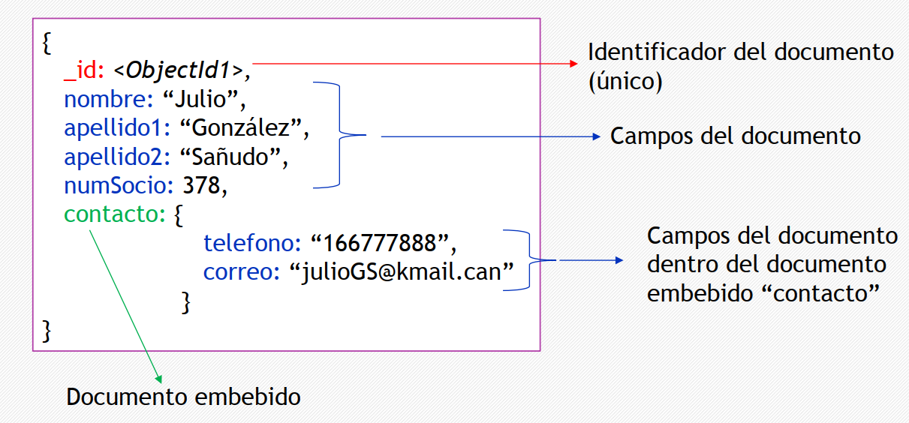
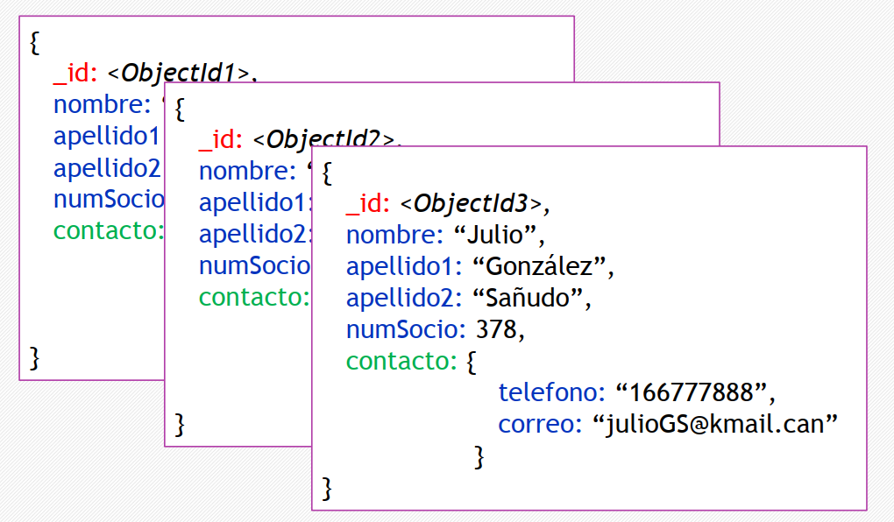

Creación, Modificación, Eliminación, Consulta, Operaciones de Administración y Creación de Usuarios
2. Introducción a MongoDB
Contenido
MongoDB es una Base de Datos NoSQL orientada a documentos en formato BSON. El formato BSON es una representación binaria de estructuras de datos y mapas. El nombre BSON está basado en el término JSON y significa Binary JSON. Al tener ya una manipulación de bases de datos relacionales pueda que la introducción a NoSQL sea un poco confuso, al igual que cuando se inició el aprendizaje de modelamiento relacional con conceptos básico como tabla, campos, relaciones, etc. Tambien se deben conocer algunos conceptos básicos de NoSQL como:
Colección
Conjunto de documentos. Similar con las tablas del modelo relacional, pero no tiene esquema, por lo que cada documento de una colección puede tener diferentes campos. Cada documento dentro de una colección tiene un identificador único SIEMPRE.
Documento
Conjunto de pares campo-valor. Similar a las filas en relacional.
- No siguen un esquema de tabla pre-definido: pueden tener tantos campos como se desee. Se almacena el nombre del campo junto a su valor.
- No hay valores nulos: o el campo está, o no está (aunque existe un tipo de dato denominado nulo).
- Pueden contener otros documentos (jerarquía de documentos).
Campos
Campos de un documento a los que se les asigna valor y sobre los que se pueden crear índices. Similar a las columnas en relacional.
id: campo especial que identifica a cada documento en una colección. Si no se le da valor en el insertado, se genera automáticamente.
Ejemplos:
Ejemplo de documento

Ejemplo de colección

Obra publicada con Licencia Creative Commons Reconocimiento Compartir igual 4.0